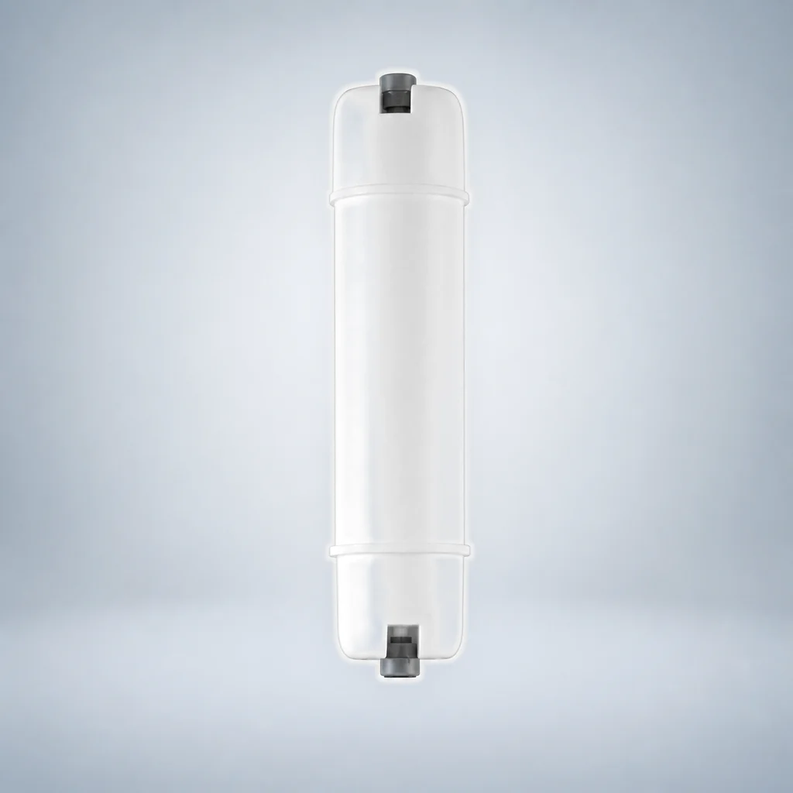

Lõi lọc than khối CTO có ren trong
- Dạng sản phẩm
- Lõi lọc lắp trực tiếp trên đường ống có ren trong
- Vật liệu lọc
- Than hoạt tính dạng khối (CTO)
Sử dụng hướng dẫn này để so sánh các lõi lọc thay thế theo từng kiểu kết nối. Các dạng đầu nối nhanh và ren trong được liệt kê riêng, còn than gáo dừa được phân biệt theo cấu tạo: dạng hạt UDF, dạng khối CTO hoặc lõi than hậu lọc T33, thay vì được xem là một sản phẩm chung có thể dùng thay thế lẫn nhau.
So sánh các model được liệt kê và mở trang chi tiết. Các bản ghi model được tính riêng với các kích thước có thể tùy chỉnh; mức độ phù hợp phải được xác nhận cho dự án của bạn.





Chọn các yêu cầu mà bạn đã biết. Cấu hình có thông số kỹ thuật chưa được nêu trong nguồn sẽ được đánh dấu là cần xác nhận thay vì được coi là khớp chính xác.
Chọn tối đa ba cấu hình. Bạn có thể sao chép bản tóm tắt yêu cầu báo giá (RFQ) có cấu trúc hoặc chuyển đến biểu mẫu yêu cầu với các mã định danh đã được xác minh và tiêu chí lọc được điền sẵn.
Phạm vi: Công cụ này thu hẹp danh sách cấu hình OEM đã được rà soát. Kiểu đấu nối cuối cùng, tính tương thích, kích thước và yêu cầu của dự án vẫn phải được xác nhận trước khi báo giá.